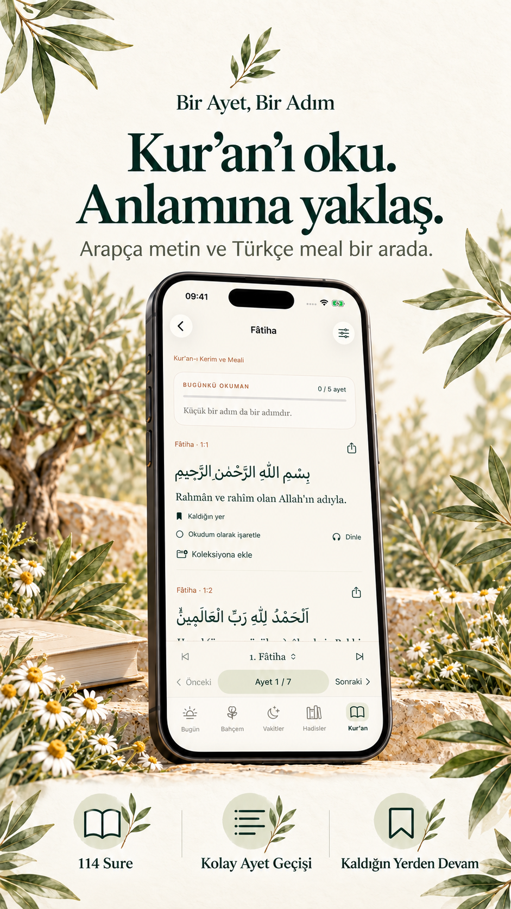
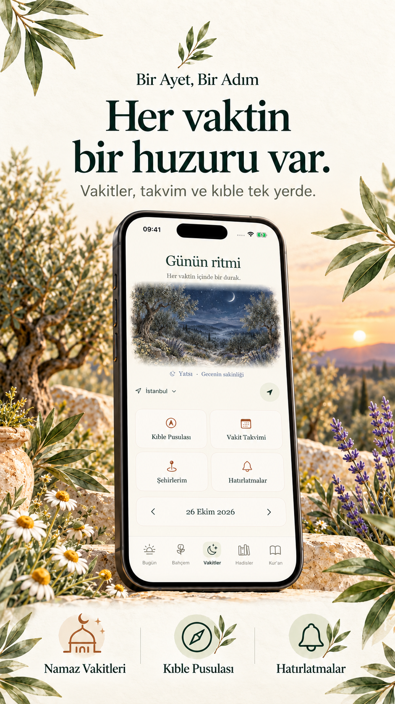
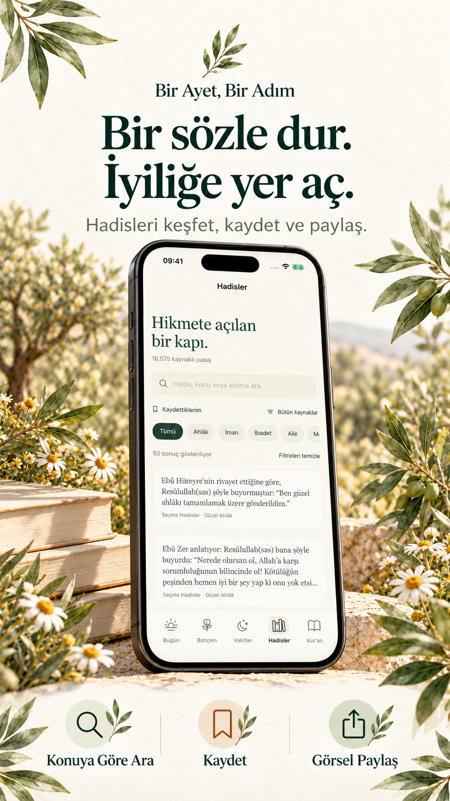
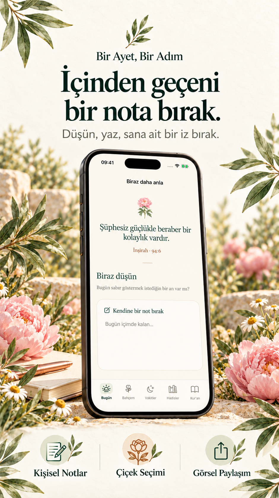
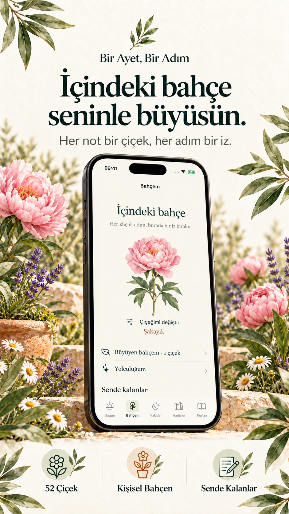
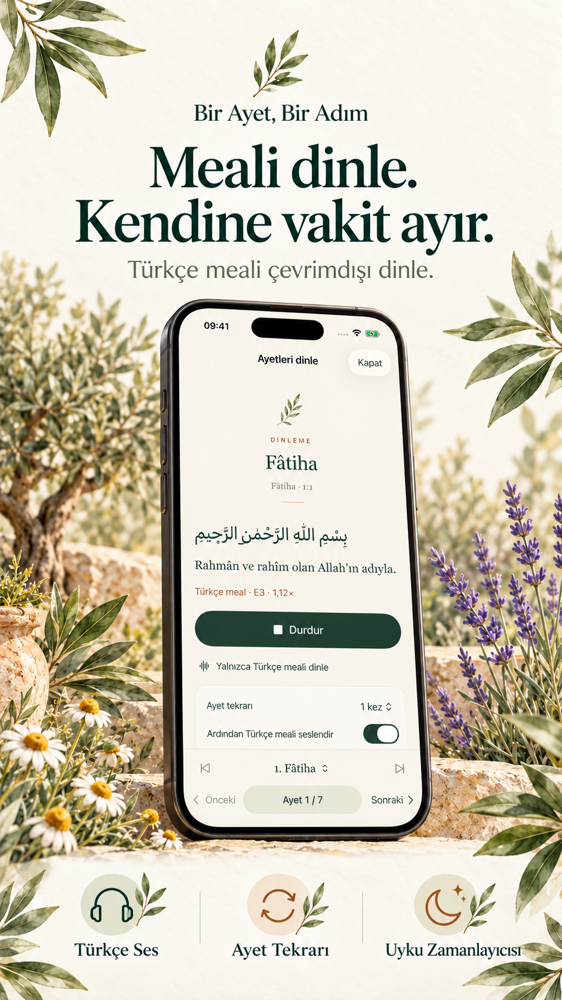

01 / Kur’an ve Türkçe meal
Oku. Anlamına yaklaş.
114 sureyi Arapça metni ve Türkçe mealiyle oku. Sure adıyla ara, ayet numarasıyla istediğin yere git.
Kur’an ve Türkçe meal, namaz vakitleri, hadisler ve sana ait notlar. Günün akışında okumaya, düşünmeye ve iyiliğe yer aç.
iOS için tasarlandı · Türkçe meal çevrimdışı dinlenebilir

Her gün, küçük bir başlangıç.Bazen bir cümleye yeniden bakmak, bazen birkaç satır yazmak iyi gelir. Bir Ayet, Bir Adım; okuduklarınla günün arasında sana ait bir bağ kurman için yanında.
Aynı sakin tema.
Sana göre şekillenen bir düzen.
114 sureyi Arapça metni ve Türkçe mealiyle oku. Sure adıyla ara, ayet numarasıyla istediğin yere git.

Türkiye’deki şehirlerin vakitlerine, aylık takvime ve kıble pusulasına ulaş. Kendi hatırlatmalarını belirle.

Kelimelerle ve konularla keşfet. Sende iz bırakanları kaydet, koleksiyonlarına ekle ve görsel olarak paylaş.

Bir ayetin düşündürdüklerini ya da gününden kalanları not et. Yazdıklarını kare veya hikâye görseline dönüştür.

Her notla kendine küçük bir alan aç. 52 çiçek illüstrasyonu arasından sana iyi geleni seç.

Türkçe meali çevrimdışı dinle. Tekrar seçenekleri ve uyku zamanlayıcısıyla kendi ritmini bul.
Ana sayfadaki bölümleri istediğin sıraya taşı. Kendi okuma hedefini belirle. Günün ayeti ve yaklaşan vakit, widget ile ana ekranında sana eşlik etsin.
Kur’an ve Türkçe meal okuma, Türkçe meal dinleme, cihazdaki hadis içerikleri, notlar ve namaz vakti hesaplama internet olmadan kullanılabilir. Arapça kıraat internetten alınır. Otomatik şehir belirleme de bağlantı gerektirebilir.
Şehir seçerek namaz vakitlerini görüntüleyebilirsin. Otomatik konum ve kıble pusulası için konum izni istenir; izinlerini iOS Ayarlar’dan değiştirebilirsin.
Notların cihazında saklanır. Uygulamanın kendi bulut yedekleme veya hesaplar arası eşitleme hizmeti bulunmaz. Cihazının sistem yedekleri, Apple ayarlarına bağlıdır.
sinanakarsu@yandex.com.tr adresine yazabilirsin. Sık sorulan diğer sorular için destek sayfasına göz at.
Soruların, önerilerin ve geri bildirimlerin için buradayız.
Bize yaz